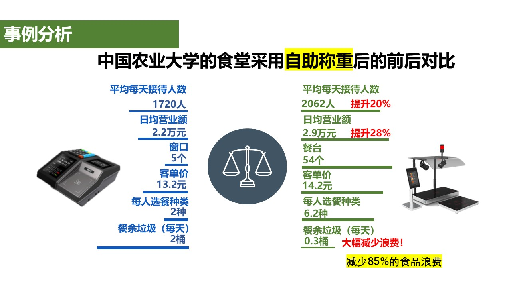

本文要点
- 食堂的本来目的，以及运营方重视的"营养""健康""价格"三个关键词
- 许多食堂"不增加菜品种类"的真正原因（排队与结算）
- 从中国·北京农业大学的食堂得到的启示，以及"计量结算"的机制
- 人均选择的菜品从平均2种增加到6.2种、食物浪费减少85％的数据
- 未来智慧食堂所需要的思路，以及赢得用户喜爱的条件
学生食堂和员工食堂，是以实惠价格提供热乎饭菜的、让人感激的存在。
那么，食堂本来的目的是什么呢？
食堂是为了什么而存在？
学生食堂的目的，是以实惠的价格为学生和教职员工提供营养均衡的饭菜。同时，它也承担着让学生彼此交流的社区场所的作用。
员工食堂也是一样。为员工提供健康的饮食，关系到健康管理、工作效率的提升以及福利待遇的充实，这一点非常重要。
也就是说，对运营食堂的一方而言，重要的关键词可以说是"营养""健康""价格"。
然而，仅凭这些，就能成为被用户喜爱的食堂吗？
食堂为什么会不受欢迎？
倾听学生和员工的声音，会发现对食堂的不满也不在少数。
我自己回想起学生时代的食堂，也有过对饭菜内容不满意的记忆。
后来，我进入大型企业工作，使用过员工食堂。虽然比学生食堂更充实，但菜品的种类并不算多。
当时的食堂，想必也有各种各样的苦衷。
那么，为什么许多食堂很难增加菜品的种类呢？
其中一个原因，就是午餐时间的排队。
为了减少排队，就减少菜品种类？
在员工食堂，有时可以通过轮班错开用餐时间。
另一方面，在大学里，许多学生在同一时间段用午餐。必须在有限的午休时间内，为大量学生提供饭菜。
因此，消除收银台前的排队，对大学食堂来说是非常重要的课题。
在传统食堂里，一般采用由收银员确认菜品、输入价格后结算的方式。
与超市的商品不同，饭菜往往没有条形码，因此需要逐一确认。
菜品种类越多，结算处理就可能越复杂。
结果，为了减少排队，便产生了"收窄菜品种类"的想法。
然而，如果菜品种类少，用户能选择的菜单也就受到了限制。
为了减少排队而减少菜品种类。这，真的是最好的办法吗？
在中国的大学食堂里发现的启示
我对这个疑问很在意，于是也在中国就大学食堂进行了走访打听。
中国有一句话叫"民以食为天"。
意思是，对人们来说，吃饭是比什么都重要的事。
中国的大企业和政府机关中，也有福利待遇充实、提供丰富菜品的食堂。然而，要实现这样的环境，需要相应的预算。
于是，我把目光投向了大学食堂。
在向多所大学食堂的用户打听的过程中，我得知有一家口碑特别好的食堂。
那就是北京农业大学的食堂。


这家食堂有意思的地方在于，它不仅让菜品种类丰富，还在结算的效率化上下了功夫。
喜欢的菜，想吃多少拿多少
这家食堂的做法中，值得关注的是让学生自己挑选喜欢的菜、想拿多少拿多少的机制。
不是选择规定好的套餐，而是可以从各种菜品中，自由组合自己想吃的东西。


然而，菜品种类一旦增多，用传统的收银方式结算就会很费时间。
这时，重要的便是根据菜品的重量自动计算费用的"计量结算"这种方法。
在取菜时测量重量，按克计价，从而减少逐一识别菜品、输入价格的麻烦。
也就是说，这是一种即使增加菜品种类，也无需依赖传统收银方式即可结算的机制。
这种方式，对用户来说也有很大的好处。
- 可以自由选择喜欢的菜
- 想吃多少拿多少
- 可以按自己的食量和预算来调整
- 挑选菜品的乐趣也增加了
食堂，并不只是填饱肚子的地方。
按照自己的喜好来挑选饭菜的乐趣，也是重要的价值。
菜品种类从2种增加到6.2种。食物浪费也减少85％
关于这项举措，在被介绍的数据中，有一些很有意思的数字。
学生一次用餐所选择的菜品种类，据称从平均2种增加到了6.2种。
此外，据称食物浪费也减少了85％。
这是一个说明"想吃的菜想拿多少拿多少"的机制拓宽了用餐选择、也带来了食物浪费削减的案例。


当然，实际效果会因食堂的运营方式和菜单构成等而有所不同。
即便如此，这个案例也为解决食堂的课题，提供了重要的启示。
即使不减少菜品种类，通过在结算方式上下功夫，也有可能同时兼顾用户的满意度与食堂的运营效率。
未来的食堂所需要的，是智慧化
正如到此为止所思考的，要成为被用户喜爱的食堂，需要各种各样的要素。
- 美味的饭菜
- 营养均衡的饮食
- 实惠的价格
- 丰富的选择
- 短暂的等待时间
特别是在用户高度集中的大学食堂和员工食堂，"能挑选喜欢的菜"与"不用长时间等待就能吃上饭"的兼顾非常重要。
为此，不仅要改变饭菜的提供方式，还需要重新审视包含点餐、计量、结账、支付在内的整个食堂运作机制。
例如，计量结算系统可以用电子秤测量菜品重量，自动计算费用。用户可以想吃的菜想拿多少拿多少，吃多少付多少。
不仅能让收银工作省力化，还可以期待食物浪费的削减以及用户满意度的提升。

在出雲創安，为了解决这些课题，我们提出图像识别、RFID、计量结算这三种智慧结算方式。
其中，计量结算是适合于自由选菜的自助餐形式、自助服务形式食堂的解决方案。
详情请见这里。
计量结算解决方案：
https://izumosoan.com/zh/smart-cafeteria-weight.html
什么样的食堂最受欢迎呢？
最后，让我们回到最初的问题。
最受欢迎的，是便宜的食堂吗？还是提供健康饮食的食堂呢？
我认为，并不仅仅如此。
对用户而言有吸引力的，难道不是想吃的菜、想拿多少拿多少、以实惠的价格、还不用长时间等待就能吃上的食堂吗？
除了食堂经营方所考虑的"营养""健康""价格"之外，还需要把目光投向用户所追求的"美味""选择""等待时间"。
不是"减少菜品来减少排队"，而是"运用技术，在增加菜品种类的同时减少排队"。
未来的智慧食堂，所需要的难道不正是这样的思路吗？
食堂，并不只是提供饭菜的地方。
"今天吃点什么？"的挑选乐趣，"真好吃"的满足感，以及"不用等待就能吃上"的舒适。
我认为，正是当这一切齐备时，才会成为真正被用户喜爱的食堂。